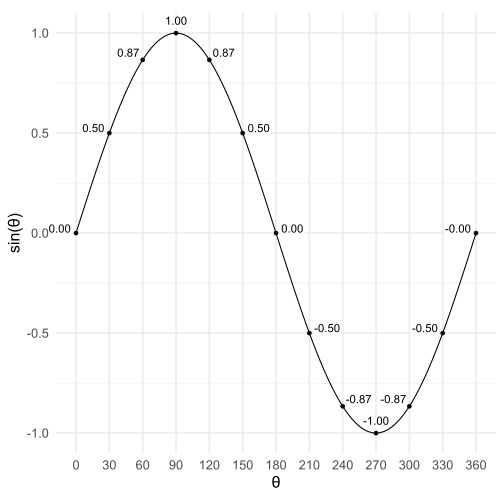
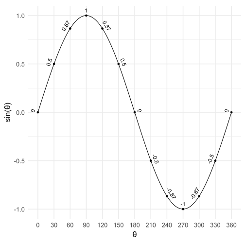
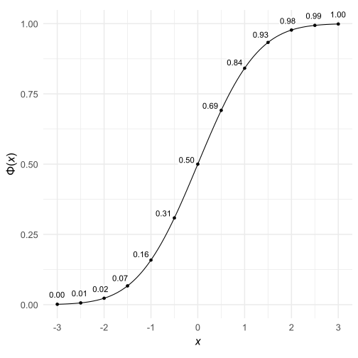

angle2vjust <- function(theta, multiplier = 1, as_degrees = FALSE) {
if (as_degrees) theta <- theta * pi / 180
(((sin(theta + pi) + 1) / 2) - 0.5) * multiplier + 0.5
}
angle2hjust <- function(theta, multiplier = 1, as_degrees = FALSE) {
if (as_degrees) theta <- theta * pi / 180
(((cos(theta + pi) + 1) / 2) - 0.5) * multiplier + 0.5
}I would like to label points on a sine function so that the labels are always legible. In a sine wave plot in which \(\theta\) ranges from 0 to 2\(\pi\), \(\sin(\theta)\) ranges from −1 to +1. Thus, the plot’s xy ratio is
\[\text{plot ratio}= \frac{2\pi-0}{1- (-1)}=\pi\]
The first derivative of the sine function is the cosine function. In my plot, the slope of the tangent line at each point is
\[ \text{tangent slope} = \text{plot ratio}\times \cos(\theta) \] The angle of the tangent line’s slope is the arctan of the slope. I would like to place the label perpendicular to the tangent line so I will add 90 degrees (i.e., \(\pi/2\) radians).
\[ \text{text angle}=\tan^{-1}(\text{tangent slope})+\pi/2 \]
Now I need a pair of functions that will convert this angle into the right values for ggplot2’s hjust and vjust arguments. I have added the angle2vjust and angle2hjust functions to the WJSmisc package, but I have defined them here as well:
Now we plot the sine function with labels. I have used geom_richtext from the ggtext package because it allows me to set a white background along with padding and margins.
library(tidyverse)
library(ggtext)
plot_ratio <- pi
tibble(theta = seq(0, 2 * pi, length.out = 13),
y = sin(theta),
tangent_slope = cos(theta) * plot_ratio,
text_angle = atan(tangent_slope) + pi / 2) %>%
ggplot(aes(theta, y)) +
geom_richtext(aes(label = round(y, 2),
vjust = angle2vjust(text_angle),
hjust = angle2hjust(text_angle)),
label.color = NA,
label.padding = unit(1, "pt"),
label.margin = unit(5, "pt"),
size = 4) +
geom_point() +
stat_function(fun = sin) +
scale_x_continuous(expression(theta),
breaks = seq(0, 2 * pi, length.out = 13),
minor_breaks = NULL,
labels = function(x) round(x * 180 / pi)) +
scale_y_continuous(expression(sin(theta))) +
coord_fixed(ratio = plot_ratio, clip = "off") +
theme_minimal(base_size = 16)
If you do not mind turning your head to one side or the other, a somewhat easier method is to set the label’s vjust to a negative value and rotate the labels by the angle of the tangent line:
tibble(theta = seq(0, 2 * pi, length.out = 13),
y = sin(theta),
tangent_slope = cos(theta) * plot_ratio,
text_angle = atan(tangent_slope)) %>%
ggplot(aes(theta, y)) +
geom_richtext(aes(label = round(y, 2),
angle = text_angle * 180 / pi),
vjust = 0,
label.color = NA,
label.padding = unit(1, "pt"),
label.margin = unit(2, "pt"),
size = 4) +
geom_point() +
stat_function(fun = sin) +
scale_x_continuous(expression(theta),
breaks = seq(0, 2 * pi, length.out = 13),
minor_breaks = NULL,
labels = function(x) round(x * 180 / pi)) +
scale_y_continuous(expression(sin(theta))) +
coord_fixed(ratio = plot_ratio, clip = "off") +
theme_minimal(base_size = 16)
What if you do not know the function’s first derivative? You can approximate the slope of the tangent line by comparing a function’s output of each point with the output of a slightly deviated point. Here is a plot of the normal cumulative distribution function.
# Small change in x
dx <- .00000001
plot_ratio <- 6
tibble(x = seq(-3,3,.5),
y = pnorm(x),
tangent_slope = plot_ratio * (pnorm(x + dx) - y) / dx,
text_angle = atan(tangent_slope) + pi / 2,
degrees = text_angle * 180 / pi) %>%
ggplot(aes(x,y)) +
geom_point() +
geom_richtext(aes(label = formatC(y, 2, format = "f"),
vjust = angle2vjust(text_angle),
hjust = angle2hjust(text_angle)),
label.color = NA,
label.padding = unit(1, "pt"),
label.margin = unit(5, "pt"),
size = 4) +
stat_function(fun = pnorm) +
theme_minimal(base_size = 16) +
coord_fixed(ratio = plot_ratio) +
scale_x_continuous(expression(x), breaks = -3:3) +
scale_y_continuous(expression(Phi(x)))